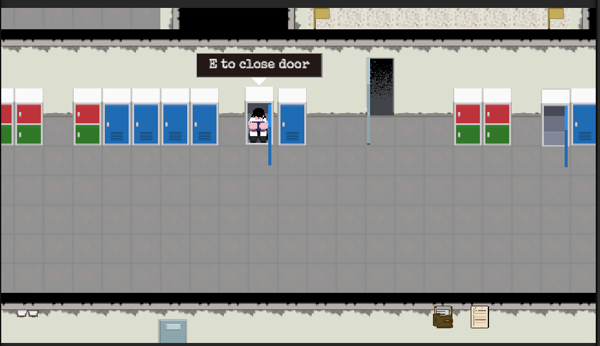
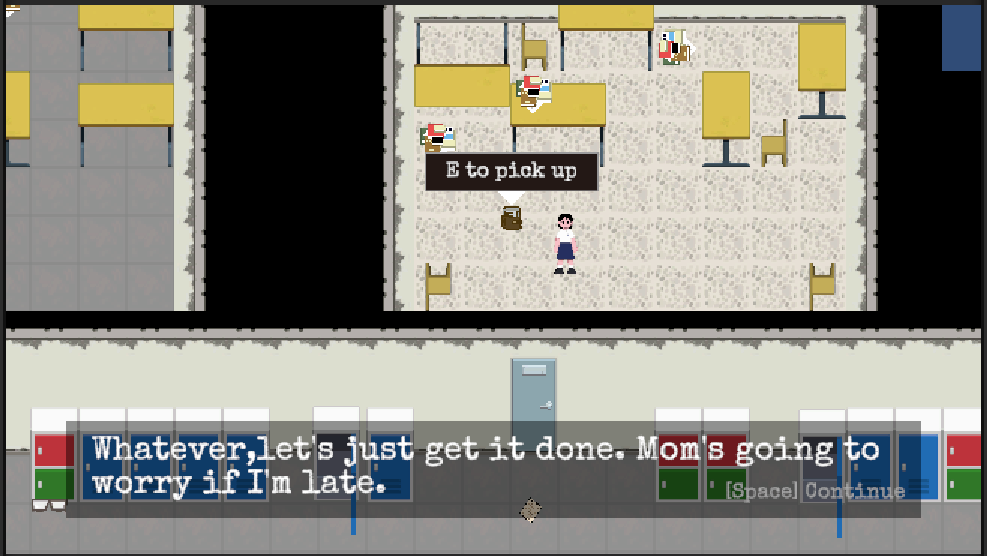

Ludum Dare 59 · 72-Hour Jam · Co-design + Sole ProgrammerLudum Dare 59 · 72 小时 Jam · 联合设计 + 唯一程序
Respond to Signal 404
Unity · 2D Pixel Horror · Signal-Detection Puzzle
A 72-hour team project that turns searching for a radio signal into a horror puzzle. I co-designed the central mechanic and was the sole programmer on a six-person team, implementing the Unity game and its WebGL build. 一个在 72 小时内完成的团队恐怖解谜项目，把寻找无线电信号变成核心玩法。我参与核心机制设计，并担任六人团队中的唯一程序员，负责 Unity 游戏实现与 WebGL 版本。
Problem问题
72 hours, six people and one programmer: the scope had to fit what one person could build.
72 小时、六个人、只有一个程序：规模必须控制在一个人做得完的范围里。
Decision决策
Centre the game on one mechanic, searching for a signal, and let puzzle state carry the story forward.
整个游戏围绕一个机制（搜索信号），用谜题状态推进故事。
Outcome结果
A WebGL build delivered within the jam and playable on itch.io.
在比赛时限内交付网页版，可以在 itch.io 上试玩。

Listening becomes the puzzle让聆听成为解谜动作
The player sweeps for a signal, reads the feedback, narrows down its source and uncovers the next story fragment. The design puts attention at the centre of the horror: searching and interpreting carry the tension alongside the audiovisual presentation.
玩家搜索信号、辨认反馈、缩小来源范围，再发现下一段故事。设计把注意力放在恐怖体验的中心：搜索与判断本身，和视听表现共同承担紧张感。
Implementing the exploration flow探索流程的实现
Detection and progression. I implemented signal detection and puzzle state in Unity C#. Detection supports the search; puzzle state tracks progression, while scene flow and UI carry the player into the next part of the experience.
检测与推进。我用 Unity C# 实现信号检测和谜题状态：检测支持搜索过程，谜题状态记录推进，场景流程与 UI 衔接后续体验。
Team boundary. I co-designed the game with Cheng Min, was the sole programmer and shared the audio work. The six-person team delivered the WebGL build hosted on Cheng Min’s itch.io account.
协作分工。我与 Cheng Min 联合设计，作为唯一程序员完成程序实现，并共同负责音频。六人团队交付 WebGL 版本，发布在 Cheng Min 的 itch.io 账号。

One mechanic within a jam deadline限时内围绕一个机制完成体验
With three days and one programmer, scope mattered as much as implementation. The project centres on signal detection and uses puzzle progression to advance the story, keeping the gameplay systems focused enough to deliver a WebGL build within the jam.
三天时间、一个程序员，控制范围与实现同样重要。项目围绕信号检测展开，用谜题推进故事，把开发集中在一套核心交互上，并在比赛时限内交付 WebGL 版本。